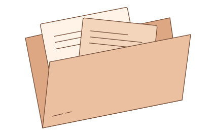

Решения
Запишите, о чём договорились и почему. Привяжите решение к задачам, которым оно понадобится.
Каждый агент получает свою задачу, решения проекта
и результаты предыдущей сессии.
Цель, связанные файлы и команды проверки.
Команды, их вывод и результат проверки.
Новая сессия видит сохранённые правки и последние действия агента.
Запишите, о чём договорились и почему. Привяжите решение к задачам, которым оно понадобится.
Агент видит, какие файлы открыть и что успело измениться в Git с момента постановки задачи.
Во вкладке «Передача» можно прочитать задание следующего агента и скачать его для напарника.
Откройте дашборд в папке своего Git-проекта.
$ pilot init $ pilot dashboard
Откройте адрес из терминала и нажмите «Новая идея». Планировщик уточнит детали, если они нужны, и передаст задачи исполнителям.
Выберите прерванный этап. После ошибки нажмите «Повторить этап с ошибкой». Во вкладке «Передача» появится задание новой сессии с исходной целью, изменёнными файлами и последними действиями.
Откройте «Результат» и раскройте отчёт приёмки. Для каждой выполненной команды доступны вывод и код завершения. Если обязательный тест упал, Pilot отправит задачу на исправление.
На дашборде выберите этап и нажмите «Скачать для напарника». Передайте файл Markdown вместе с соответствующей версией кода.

Нужны Git, Node.js 22.18 или новее и npm. Скопируйте команду установки в терминал.
npm install -g https://github.com/yevgenevic/context-pilot/releases/download/v0.1.3/context-pilot-0.1.3.tgz
В папке проекта выполните pilot init и pilot dashboard. Команда pilot doctor покажет доступные CLI. Codex выполняет задачи автоматически. Для Claude Code можно скачать задание во вкладке «Передача».